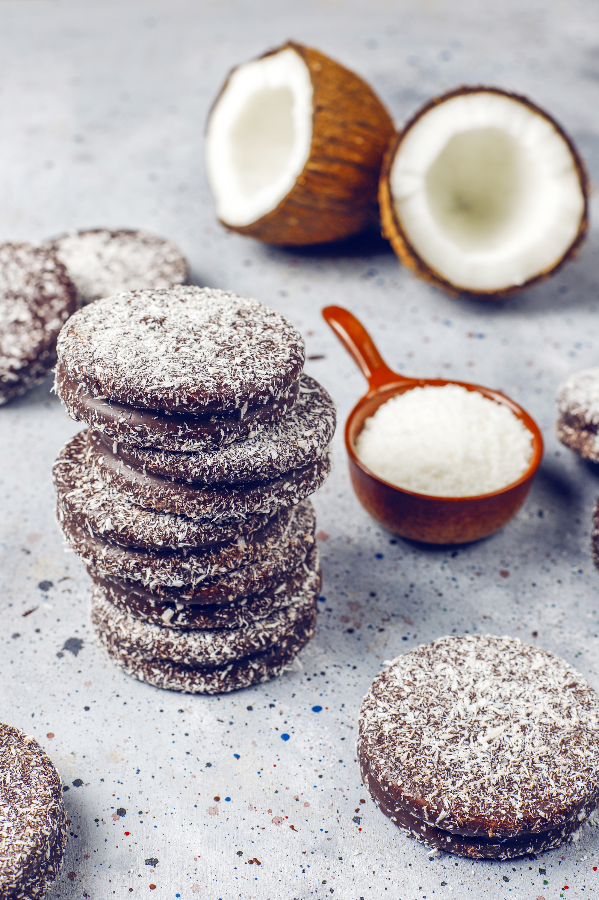

Doces · Biscoitos
Biscoitinhos de chocolate e coco

Ingredientes
- 1 1/4 xícara de margarina
- 1 xícara de açúcar
- 1 2/3 xícaras de farinha de trigo
- 1 colher (sopa) de fermento em pó
- 1/3 xícara de cacau em pó
- 1 pitada de sal
- 1 xícara de chocolate em pó
- 3 pacotes pequenos (150 g) de coco ralado
- 1/4 xícara de água fervente
- 1 colher (chá) de café solúvel já preparado
Modo de preparo
- Bata margarina e açúcar até creme leve e fofo.
- Peneire farinha, fermento, cacau, sal e chocolate em pó; misture com o coco.
- Misture água fervente com café solúvel.
- Incorpore os secos em três etapas alternando com a água com café, batendo na batedeira. Descanse 30 minutos na geladeira. Preaqueça o forno em temperatura média (200 °C).
- Faça bolinhas do tamanho de uma noz, disponha com 5 cm de espaço e asse. Deixe esfriar e congele.
Observação: Congelamento: cubra com plástico, congele e passe para saco plástico sem ar. Descongelamento: temperatura ambiente por 1 hora.